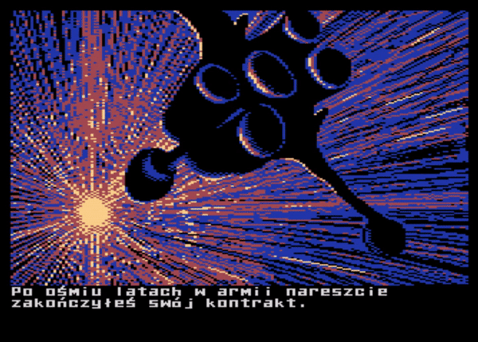

Mad-Pascal
Introduction
Memory map
Usage
Syntax
Types
Constants
Variables
Instructions
Programs, units, librarys
Procedures, functions, modifiers
Macros
Assembler inlining
Resource files
File operations
Interrupt handling
Alternatives to DOS
Essential libraries
Tips and tricks
Examples
Projects
Benchmark Suite
Star Vagrant
Old Mansion
Pac Mad
Flob
Mad-Pascal
Projects
Benchmark Suite
author: zbyti
platform: A8
sources
Star Vagrant

author: MADRAFi
platform: A8
home page
sources
Old Mansion
author: bocianu
platform: A8
home page
sources
Pac Mad
author: bocianu
platform: A8
home page
sources
Flob
author: bocianu
platform: A8
home page
sources
GitHub
« Previous